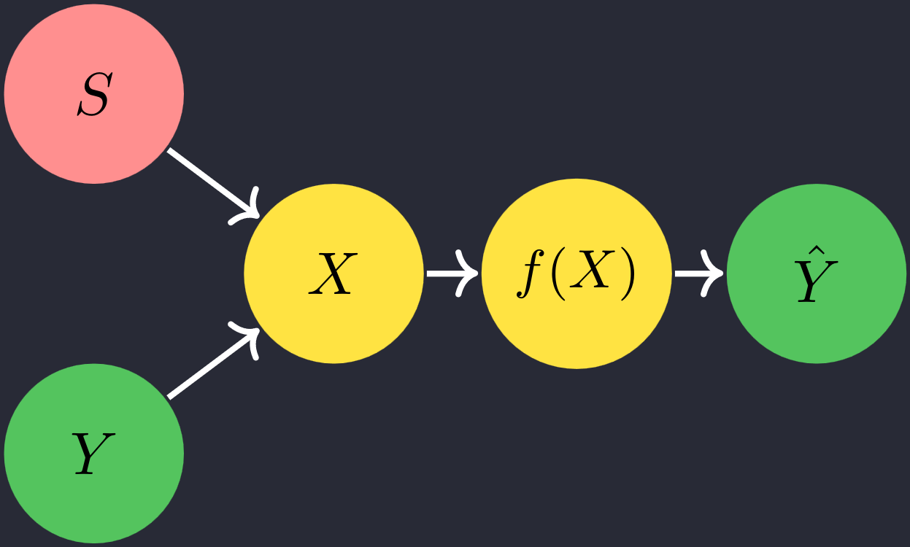
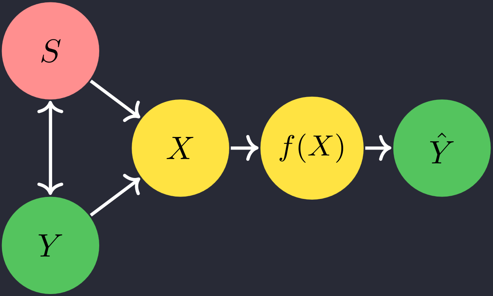

FairerCLIP: Debiasing Zero-Shot Predictions of CLIP in RKHSs
Sepehr Dehdashtian, Lan Wang, Vishnu Narresh Boddeti{sepehr, wanglan3, vishnu} @ msu.edu
Types of Correlations

Spurious Correlation

Intrinsic Dependency
Political Bias in Pre-Trained LLMs